来源：https://b121w2zgwyx.feishu.cn/docx/Gkzpdyd4Eo1Wn8x8Q8oc32DAnEh
我的小程序目前的最终效果大家可以看看：
在开始本期内容之前，如果你还没有看过前面两期的教程，需要先去看一下：
1、coze搭建海报生成微信小程序之：页面搭建
2、coze搭建海报生成微信小程序之：业务逻辑实现
上一期内容，我们完成了首页的主要功能，海报生成页面。本期内容我们将完成另外一个“我的”页面的业务逻辑。
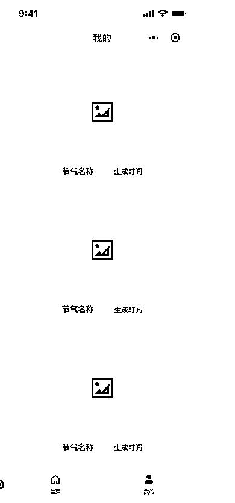
这个页面主要的功能就是展示历史生成记录，便于查看。
因此它的主要功能就是拉取历史记录显示出来
但是历史记录在哪里呢？ 还没有！因此我们需要把每次生成的内容都提前保存下来。
因此我们需要加一个数据库存储的功能
先点击数据旁边的“+”号，再选择数据库
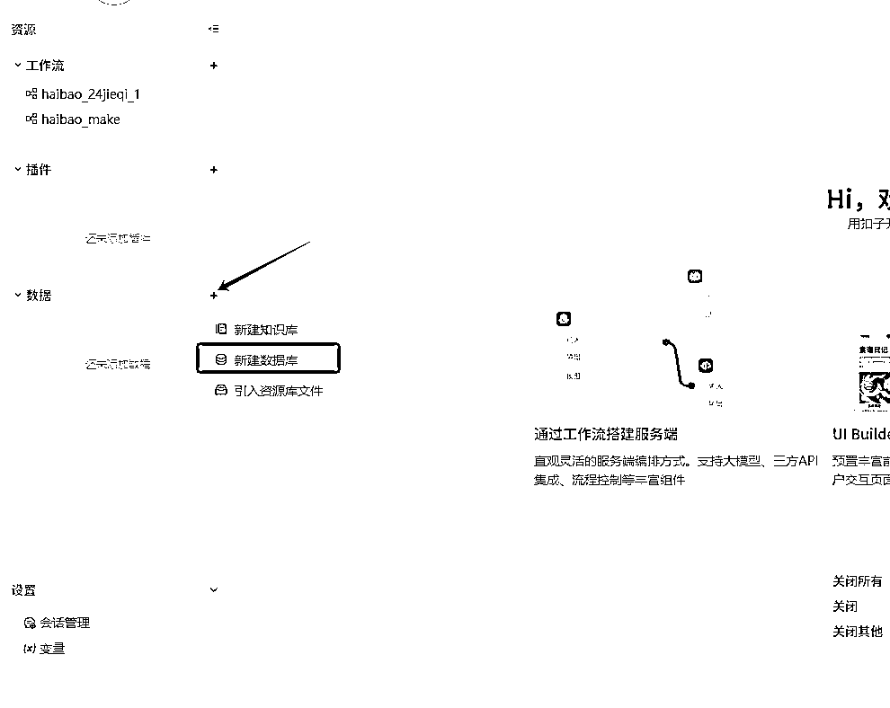
然后新建一下表名
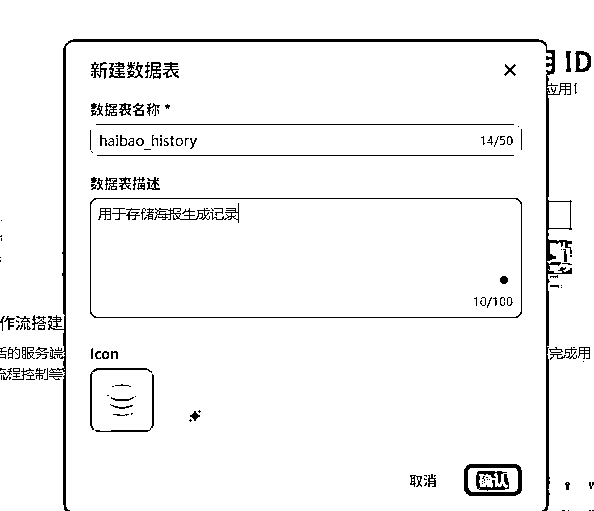
接下来我们设计一下这个数据表，按照我的如下配置新建数据表
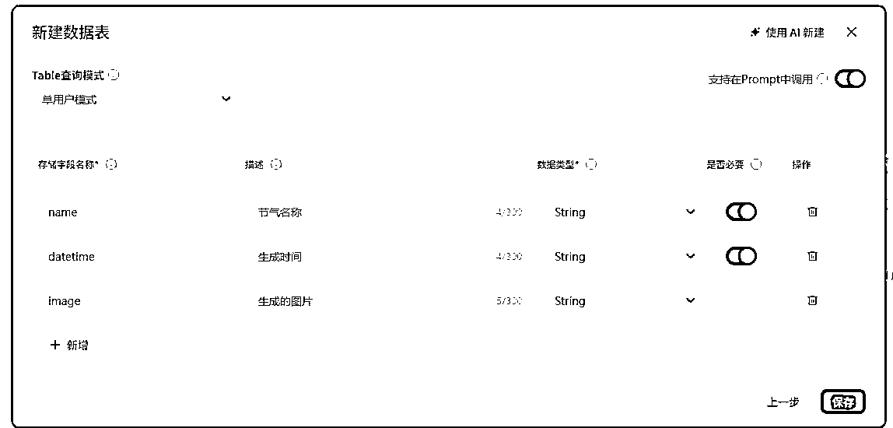
数据表添加之后，我们需要改造一下我们之前的生成工作流，我们需要在每次生成之后，将记录保存到我们的数据库中。
切换到我们的haibao_make工作流中，生成海报和结束节点之前，新增一个数据库节点，先点击连线之间的+号，再选择一下数据库
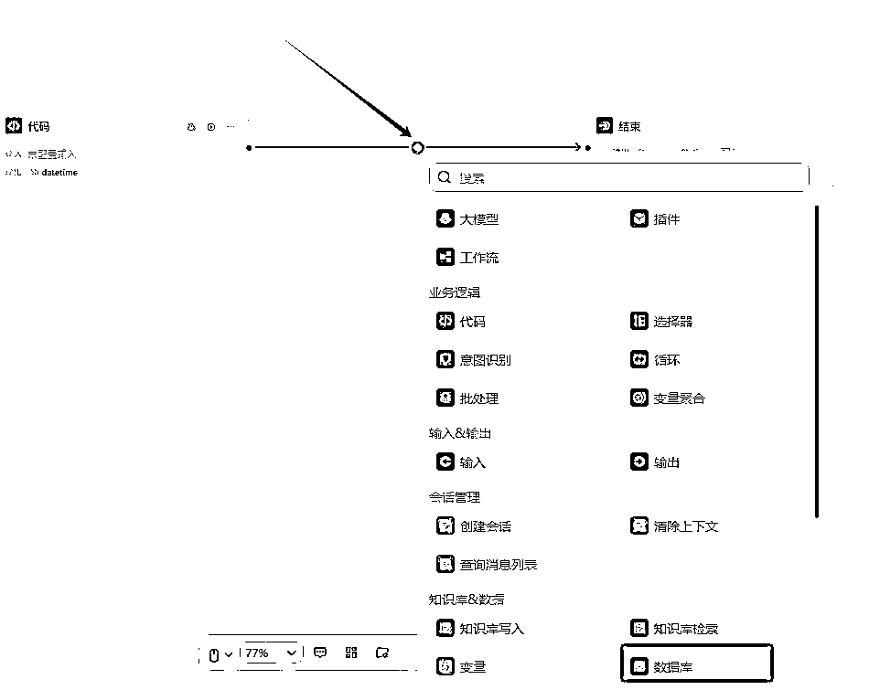
点击数据库，我们配置一下这个节点，首先需要将我们第一步建好的表添加进来
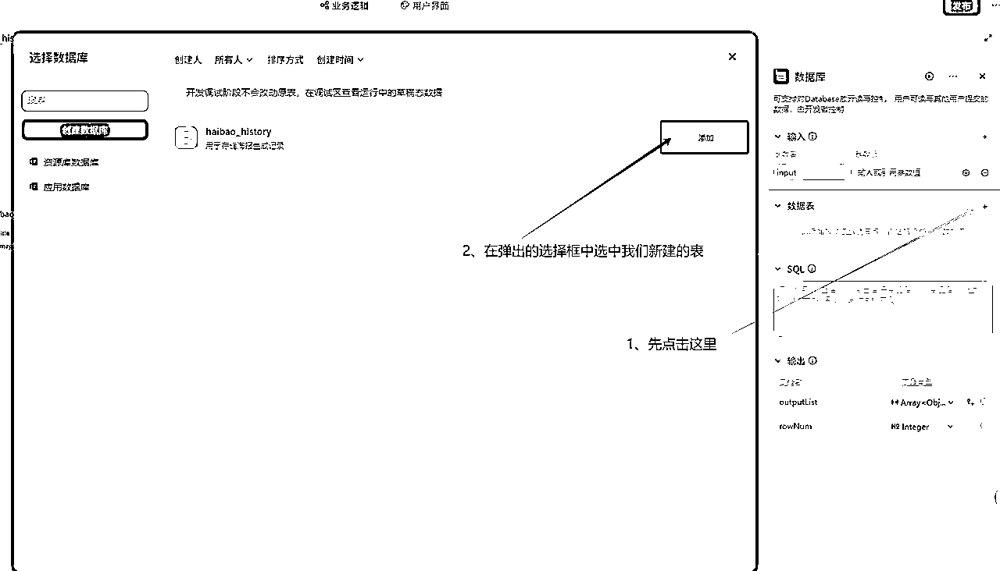
接着，我们配置一下数据库的输入，也就是我们生成好的内容，配置如下
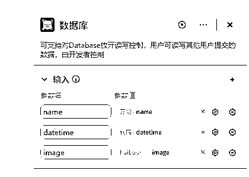
接下来这一步没写过代码的，估计会麻烦些，需要写sql语句将记录插入。不过不会写也没有关系，coze有搭配工具，如果有不懂，问问AI，学习成本也很低。
首先，我们回顾一下数据表里的字段，分别是name，datetime和image，我们需要写sql将工作流的变量与数据库的绑定和插入。
先点击这个AI辅助写sql工具
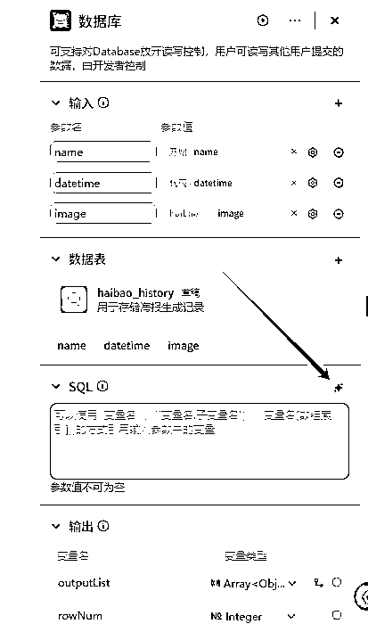
然后在弹出的查询目标中，写一下 ：往数据表插入 name，datetime和image；然后让AI自动写出语句
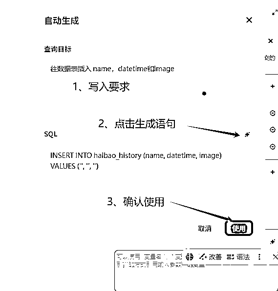
这样语句就写好了
INSERT INTO haibao_history (name, datetime, image) VALUES ('', '', '')
这个语句的意思就是 往数据表 haibao_history 中插入一条数据， VALUES的内与前面的括号一一对应的关系。代表的是实际插入的内容。我们观察到，都是空字符串，这显然是不对的。因此我们还需要将节点接收到的变量赋值进来。改写之后语句变成这样子了
INSERT INTO haibao_history (name, datetime, image) VALUES ('{{name}}', '{{datetime}}', '{{image}}')
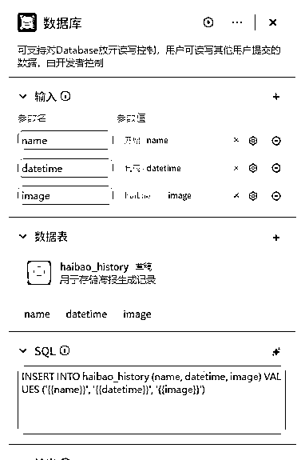
新建工作流的细节步骤之前都讲过了，这里就不再细诉了，我之前把建完的机构发出来给大家看看
其中，开始节点有一个num参数，意思就是总共读取几条
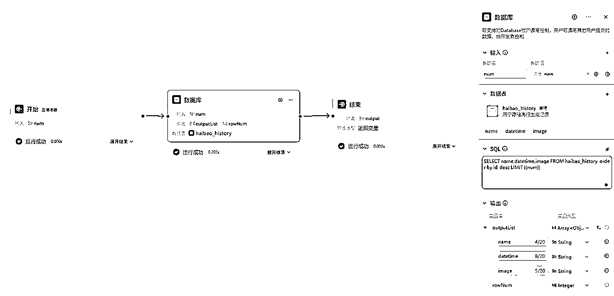
sql语句为：SELECT name,datetime,image FROM haibao_history order by id desc LIMIT {{num}}
因为历史记录，应该是点击我的页面之后就应该全部出来，所以我们按如下步骤绑定事件
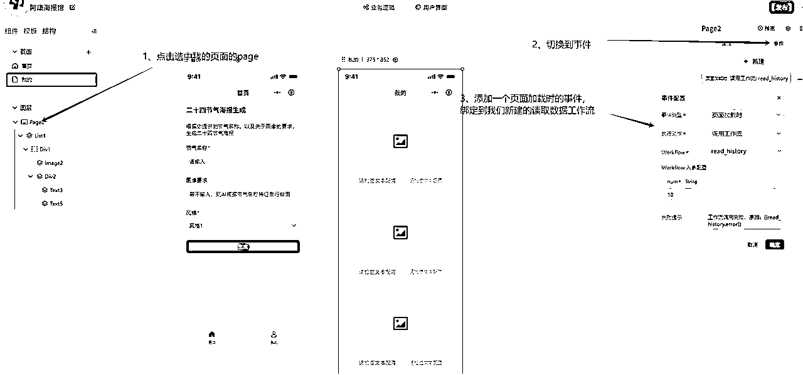
按照下图步骤，绑定数据到列表
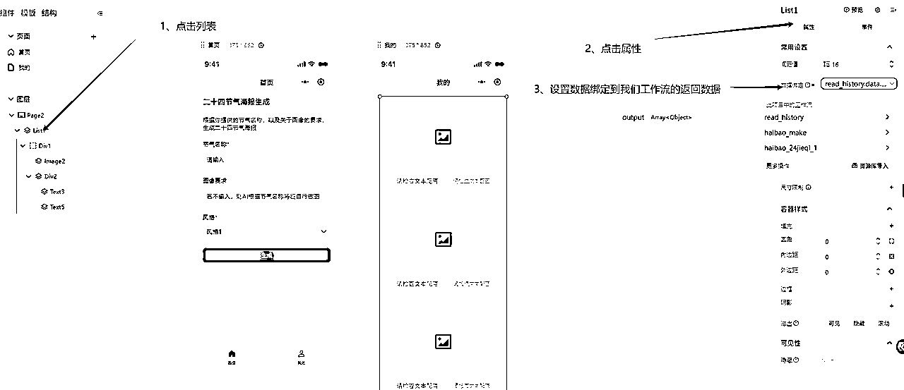
分别点击下面这三个地方，设置一下绑定数据
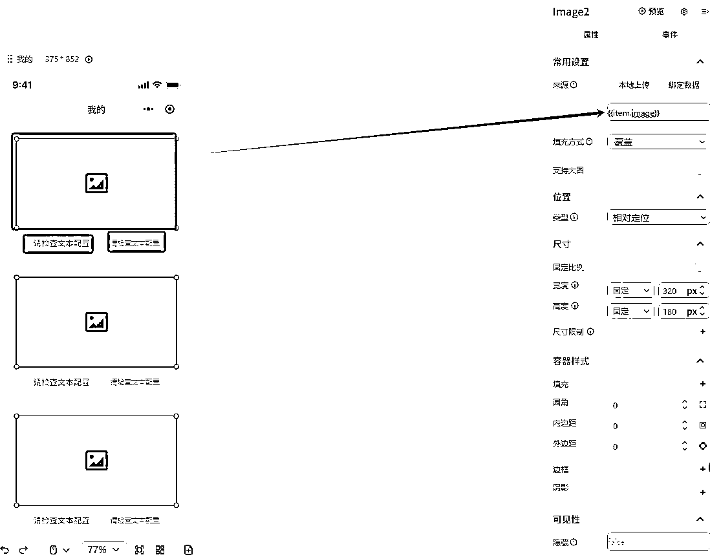
格式固定位{{item.??}} ??就是对应工作流的返回字段
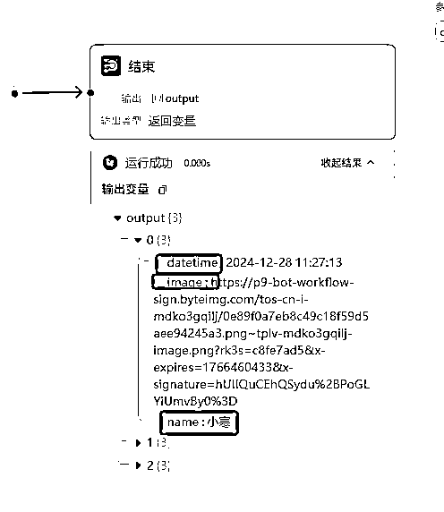
好了，到此为止，我们整个小程序已经做好了。点击预览试试效果：
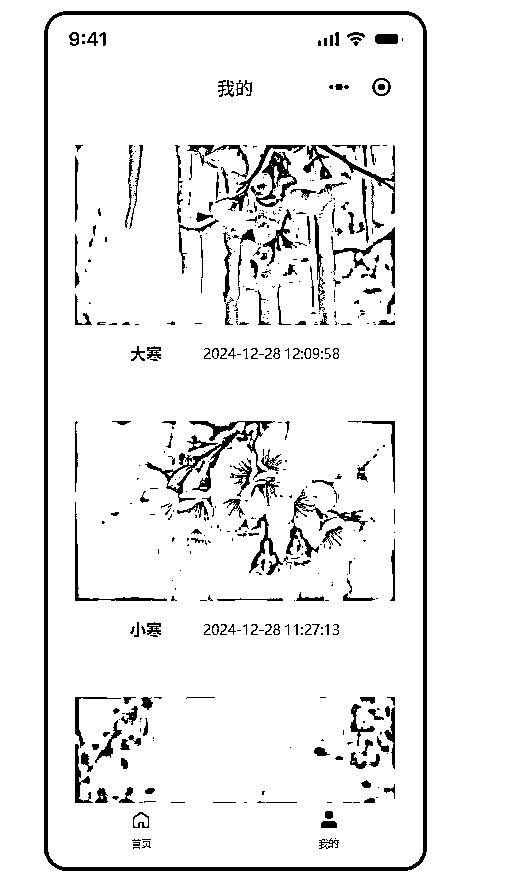
完美！
发布微信小程序之前，请确认微信小程序已经完成配置，并且需要备案通过
然后我们点击一下右上角的发布，进入发布页面
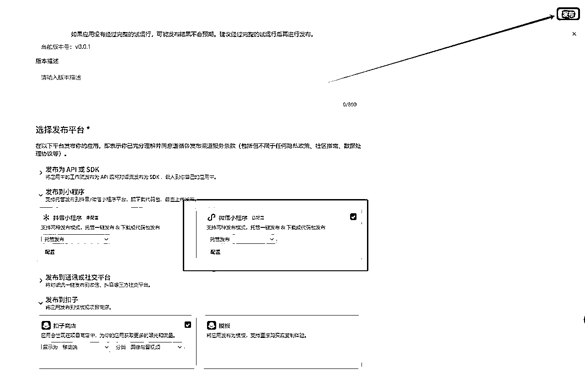
第一次使用，需要先点击配置然后填写一下小程序的APPid进行绑定
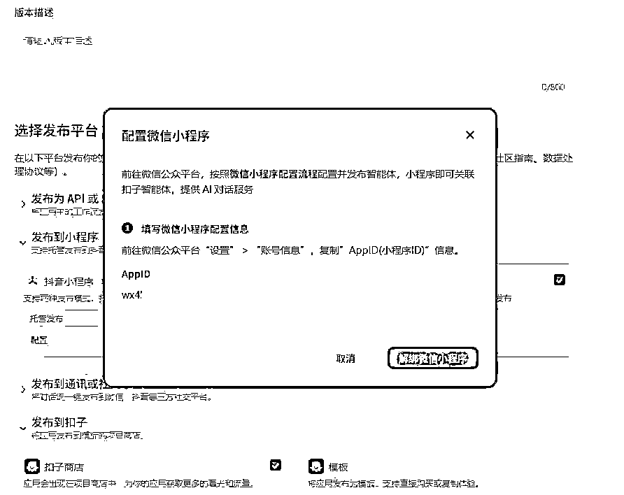
完成发布！